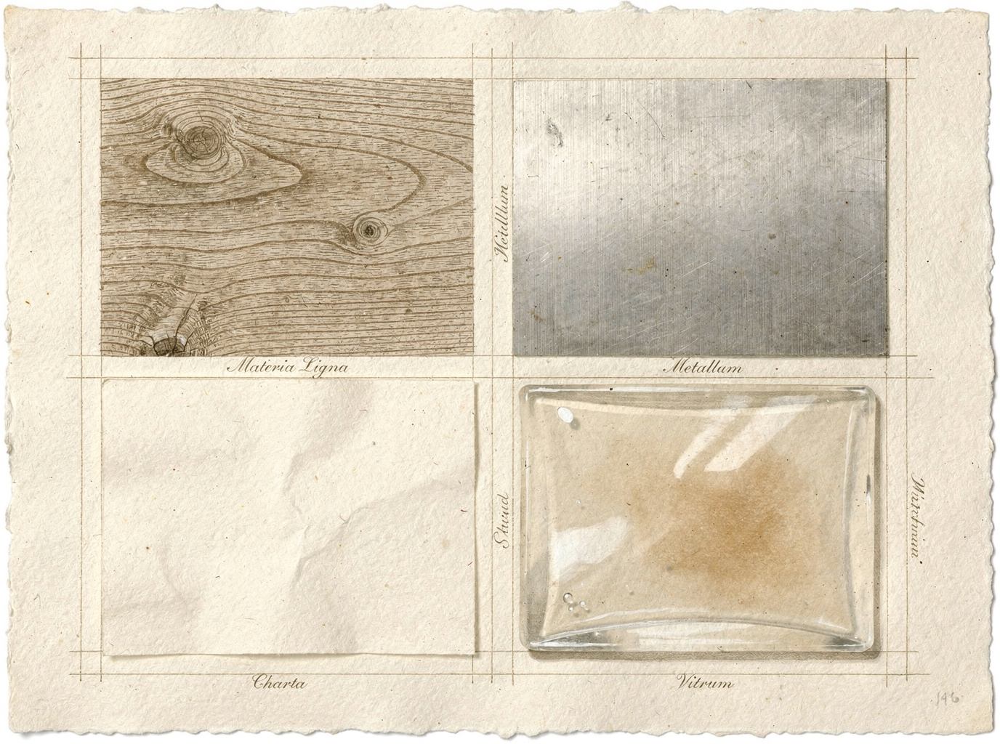

April to June 2026. Four launches. Claude Design from Anthropic on April 17. Google Stitch in May. Figma Make and Motion in May. Adobe Creative Agent in June. Eight weeks that redrew the map of who builds what — and who controls the creative pipeline. This wasn't a coincidence. It was a land grab, and everyone saw it coming except the people who will be most affected by it: the designers.
Each of these tools does something different. Claude Design generates interfaces from text prompts, sitting inside Anthropic's chat ecosystem. Google Stitch is a generative layout engine that assembles entire screen flows from design-system tokens. Figma Make and Motion bring AI-native generation and animation into the browser-based canvas that already owns the design market. Adobe Creative Agent embeds agent-based creative workflows directly into Creative Cloud, the suite that has defined professional creative software for three decades. Four different approaches. Four different philosophies. One shared objective: own the pipeline from idea to production.
The timing is not accidental. The AI models reached a threshold in early 2026 where they could generate production-quality UI from natural language. Not wireframes. Not mockups. Production code. The kind you ship. Once that threshold was crossed, the race was on. Every company with a stake in design software knew that the window to establish dominance was measured in months, not years. They were right.
The Four Entrants
Each player entered the field from a different direction, carrying different advantages and different baggage. Understanding the land grab means understanding what each one brought to the fight.
Claude Design (Anthropic, April 17) is the most conceptually pure of the four. It lives inside the Claude chat interface. You describe what you want — a dashboard, a checkout flow, a settings panel — and it generates a fully styled, responsive interface with real components. No canvas. No layers panel. No design file. The prompt is the design file. Anthropic's bet is that the chat interface becomes the universal creative surface, and that the design tool of the future looks more like a conversation than a canvas. It's a radical thesis, and it has the advantage of being the simplest to use. It also has the disadvantage of being the hardest to integrate into existing design workflows. Designers don't work in chat windows. Not yet.
Google Stitch (May) takes the opposite approach. It's a generative layout engine built on top of Google's Material Design system and its internal design tokens infrastructure. You feed it a design system — colors, typography, spacing, component definitions — and it generates complete screen layouts that are guaranteed to be consistent with the system. Stitch is not trying to replace the design tool. It's trying to automate the layout problem so designers can focus on system-level decisions. Google's advantage is infrastructure: nobody else has a design system as widely adopted as Material, and nobody else has the training data that comes from millions of Android and web applications built on that system. The risk is that Stitch feels like a Google product — powerful, systematic, and slightly impersonal.
Figma Make and Motion (May) are Figma's answer to the AI moment, and they are the most strategically important products Figma has shipped since Figma itself. Make generates designs from prompts directly on the Figma canvas — not as static images, but as editable Figma layers with auto-layout, components, and styles. Motion does the same for animation: describe a transition, a micro-interaction, a page scroll effect, and it builds it in Figma's timeline. Figma's advantage is the user base. Over thirty million designers and developers use Figma. They already have the files, the components, the design systems. Make and Motion don't need to convince anyone to switch tools. They just need to convince people to use the AI features inside the tool they already have open. That is an enormous advantage.
Adobe Creative Agent (June) is the most ambitious of the four. It's not a single feature — it's an agent layer that sits across the entire Creative Cloud: Photoshop, Illustrator, After Effects, Premiere, XD. You describe a creative task — "generate twenty variations of this hero image with different typography treatments" — and the agent orchestrates multiple applications to produce the output. It can open files, apply effects, export assets, and iterate. Adobe's advantage is the ecosystem. No other company has a suite that covers the full creative workflow from image editing to video production to UI design. The risk is complexity. Creative Agent has to work across a dozen applications with decades of legacy code. If it stumbles, it stumbles hard.
The Territory
What each company is really fighting for is not features. It's not even users. It's the design-to-code pipeline — the moment a design becomes a product. For decades, this was a manual translation step. A designer hands off a file. A developer interprets it. Something is always lost in translation. The handoff is where time disappears, where fidelity breaks, where the gap between what was designed and what gets built becomes visible.
AI design tools collapse this into a single prompt. You describe the interface. The tool generates it — not as a picture, but as production code. The handoff disappears. And with it, the role of the person who used to do the translation. Whoever owns the tool that generates the final UI owns the handoff. And the handoff is where the money is.
This is not a feature war. It's a territory war. The four companies are not competing on who has the best AI generation. They are competing on who controls the moment of translation — the point where a design stops being an idea and starts being software. That point has been contested for thirty years. It has never been winnable in a single stroke. AI makes it winnable.
Consider the economics. The design-tool market is worth roughly $15 billion. The software development market is worth over $400 billion. The design-to-code handoff sits at the intersection of both. If you own the handoff, you don't just capture the design-tool market. You capture a piece of every product that gets built. That's the real prize. That's what the land grab is about.
The Incumbent Problem
Figma has the user base. Adobe has the ecosystem. Anthropic has the models. Google has the infrastructure. None of them have all four. The land grab is about who can assemble the full stack first — and who can do it before the others close the gaps.
Figma's user base is its moat, but moats don't last when the terrain shifts. Thirty million users is a lot of people to lose. It's also a lot of people to retrain. If Claude Design can generate a production-ready interface from a single prompt, and Figma Make requires you to open Figma, navigate a canvas, and work with layers — the simpler tool wins over time. Not immediately. But over time. The question is whether Figma can make its AI features simple enough, fast enough, that the friction of switching outweighs the friction of staying.
Adobe's ecosystem is its superpower and its anchor. Creative Cloud is everywhere. It's on every designer's machine. It's the default. But Creative Agent has to work across Photoshop, Illustrator, XD, After Effects, Premiere — applications built in different decades, on different architectures, by different teams. The integration challenge is enormous. If Creative Agent feels like a layer on top of legacy software rather than a native experience, designers will notice. They always do.
Anthropic's models are the best in the world at understanding and generating structured output. Claude Design benefits from this directly. But Anthropic has no design tool. It has no canvas. It has no user base of designers. It has a chat window and an API. The bet is that the chat window is enough — that the interface for design is language, not visual manipulation. It's a bet that could pay off enormously or fail completely. There is no middle ground.
Google's infrastructure is unmatched. Material Design is the most deployed design system on the planet. Google's training data — millions of apps, billions of screens — gives Stitch a head start that no one else can replicate. But Google has a history of launching design tools and letting them wither. Designers remember. Trust is earned slowly and lost quickly in this market, and Google has lost it more than once.
The design tool that wins won't be the one with the best AI. It will be the one that makes AI invisible — so designers forget they're using it. — A design-tool veteran, speaking off the record
This is the insight that matters. Designers don't want to use AI. They want to design. The tool that makes the AI disappear into the workflow — that makes generation feel like extension, not replacement — is the tool that wins. Every one of the four entrants knows this. None of them have solved it yet.
The Stack Each Player Holds
Figma: User base + canvas + collaboration. Missing: models, infrastructure.
Adobe: Ecosystem + applications + distribution. Missing: AI-native UX, speed.
Anthropic: Models + safety + structured output. Missing: design tool, user base.
Google: Infrastructure + design system + training data. Missing: designer trust, focus.

What This Means for Designers
The job isn't going away. It's changing. The designer becomes a director — setting intent, curating output, making taste decisions. The tools handle execution. This is the same shift that happened when photography went digital, when music production moved to DAWs, when video editing left the tape bay. The craft doesn't disappear. It moves up the stack.
But the transition will be disorienting. Designers who built careers on pixel precision will find that precision is now a commodity. The value moves from how you make something to what you choose to make — and why. Taste, judgment, systems thinking, strategic intent: these become the differentiators. Execution becomes table stakes.
This is not a comfortable transition. It never is. But it's also not a new one. Every creative field that has been transformed by automation has followed the same arc: panic, adaptation, expansion. The photographers who survived the digital transition were not the ones who clung to the darkroom. They were the ones who realized that the camera was no longer the bottleneck — the eye was.
The designers who thrive in this new landscape will be the ones who understand that their value was never in moving rectangles around a canvas. It was in knowing which rectangles to move, and why, and for whom. The tools are getting better at the first part. They are not getting better at the second. That's still a human job. It will be for a long time.
Eight weeks, four launches, one question: who owns the moment a design becomes real? The answer will determine the shape of creative software for the next decade. Not because the best tool will win — the best tool rarely wins. But because the tool that controls the handoff controls the pipeline, and the tool that controls the pipeline controls the economics of every product that gets built.
The land grab is underway. The borders are being drawn. And the designers who are paying attention — the ones who understand that this is not about features but about power — are the ones who will shape what comes next. Everyone else will have it shaped for them.